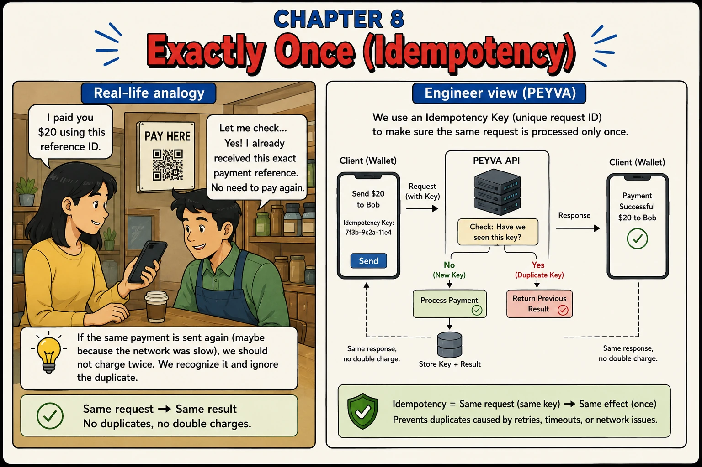

Chapter 8
Exactly Once (Idempotency)
Same request, same ID, same result.

1. Intuition
- Alice's phone sends 'transfer $20', the network hiccups, and she taps send again.
- Without protection, peyva would debit her twice.
- An idempotency key is a reference number. If peyva has seen it before, it returns the same result instead of repeating the work.
2. Concepts
- Idempotency Key. A unique ID the client attaches to a request so retries can be recognized as duplicates.
- Duplicate Request. The same idempotency key arriving more than once, usually from a retry after a slow or dropped response.
- Idempotent. An operation that has the same effect whether it runs once or many times with the same key.
- Stored Result. The response saved next to the key, so a repeat returns exactly what the first attempt returned rather than a freshly computed answer.
3. Under the Hood
- peyva checks the key: new -> process and store the result. Duplicate -> return the stored result, unchanged.
- Either way, the client sees the same response, but the money only ever moves once.
4. Build It Hands-on Building in Go, change in Chapter 0
- The Teller learns to recognise a payment it has already handled.
Generated Knowledge Prompting. Have the assistant produce the relevant facts before it uses them. Making it enumerate how duplicates actually arise gives the design somewhere to put each case, instead of you meeting them in production.
Documented in The Prompt Report: Generated Knowledge
Build this in Go, standard library only.
Continue the codebase from earlier chapters.
Code in peyva/<component>/, one folder per component.
Money: exact decimal or integer minor units, never floating point, two decimal places.
The goal and invariants are in peyva/goal.md.
The Teller will move money twice if it receives the same payment request twice, a retry after a timeout is indistinguishable from a genuine second payment.
First, list the distinct ways a duplicate request reaches a payment system in the real world. For each, say whether the caller knows the first attempt succeeded.
Then make the Teller recognise a repeat: the caller supplies a reference with the request, and a reference the Teller has already handled returns the original result without moving money again. Store the reference and its response in the same atomic unit that moves the money. Not before, not after.
Then go back over the list you wrote and tell me, case by case, which ones your design now handles and which it doesn't. Include what happens if two requests carrying the same brand-new reference arrive at the same instant.
Done when the same reference twice pays once, two different references pay twice, and both duplicate responses are byte-identical.
The portal
- The portal stops punishing an impatient customer.
The portal is plain HTML and CSS. No framework, no build step, no dependencies.
It lives in peyva/portal/. Anything it needs from the server is Go, standard library only.
One customer's wallet at a time, never everyone's at once. A switcher at the top says whose.
New work joins the menu.
The goal and invariants are in peyva/goal.md.
A customer who taps send twice must not pay twice. Send attaches the same reference to a resubmission of the same form, and shows the original result rather than a second payment.
Done when double-submitting the form leaves one payment in History, and the page looks the same both times.
5. Break It Test it
- Simulate exactly the flaky-network scenario idempotency exists for.
- Send the same transfer request twice with the same idempotency key. Confirm Bob only receives $20 once, not $40.
- Send it twice with two different keys: this time it really is two separate $20 transfers, as intended.
- Compare the two duplicate responses byte for byte. They're identical.
Quick tip: The client genuinely can't tell a duplicate response from the real one. That's the point.